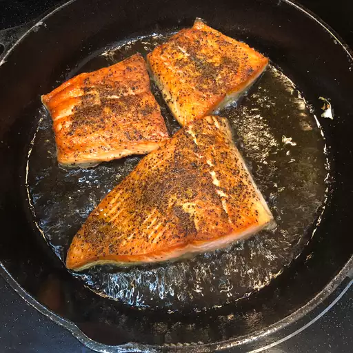
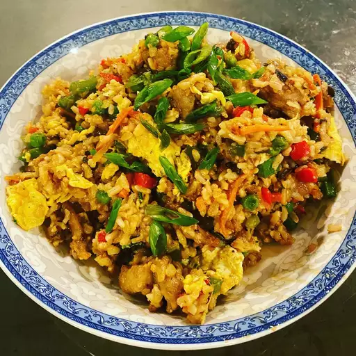

Odin Recipes

Description
This Pan-Seared Salmon recipe is great for beginners, and great
for a quick meal! These salmon fillets are seasoned with salt,
pepper, and optional capers, garnished with slices of lemon.
Ingredients
- 4 (6 ounce) salmon fillets
- 2 tablespoons olive oil
- 2 tablespoons capers
- 1/8 teaspoon salt
- 1/8 teaspoon ground black pepper
- 4 slices lemon
Steps
- Preheat a large heavy skillet over medium heat for 3 minutes
- Coat salmon fillets with olive oil;
place skin-side down in the preheated skillet and increase heat to high.
Sprinkle with capers, salt, and pepper; cook for 3 minutes on one side. Turn salmon fillets over;
continue to cook until salmon flakes easily with a fork, about 5 minutes.
- Tranfer salmon to individual plates and garnish with lemon slices.

Description
This garlic fried rice is a slightly more complex recipe, however
still beginner friendly! This recipe offers a simple yet
delicious homemade experience from Asian cousine.
Ingredients
- 2 tablespoons vegetable oil, divided
- 8 ounces skinless, boneless chicken breast, cut into strips
- 1/2 red bell pepper, chopped
- 1/2 cup green onion, chopped
- 4 cloves garlic, minced
- 3 cups cooked brown rice
- 2 tablespoons light soy sauce
- 1 tablespoon rice vinegar
- 1 cup frozen peas, thawed
Steps
- Heat 1 tablespoon of vegetable oil in a large skillet set
over medium heat. Add the chicken, bell pepper, green onion
and garlic. Cook and stir until the chicken is cooked
through, about 5 minutes. Remove the chicken to a plate
and keep warm.
- Heat the remaining tablespoon of oil in the same skillet
over medium-high heat. Add the rice; cook and stir to heat
through. Stir in the soy sauce, rice vinegar and peas,
and continue to cook for 1 minute. Return the chicken
mixture to the skillet and stir to blend with the rice
and heat through before serving.

Description
If you're looking for a smoothie that is nutritious and yummy,
with both fruit and yogurt combined, this recipe is for you!
With only seven ingredients and total time of five minutes, this
recipe is simple, quick, and easy! Especially for those who normally
struggle with these.
Ingredients
- 1 cup strawberries
- 1 banana
- 1/2 cup yogurt
- 1/4 pineapple juice
- 1 1/2 teaspoon white sugar
- 1 teaspoon orange juice
- 1 teaspoon milk
Steps
- Combine strawberries, banana, yogurt, pineapple juice,
sugar, orange juice, and milk in a blender; blend until smooth.